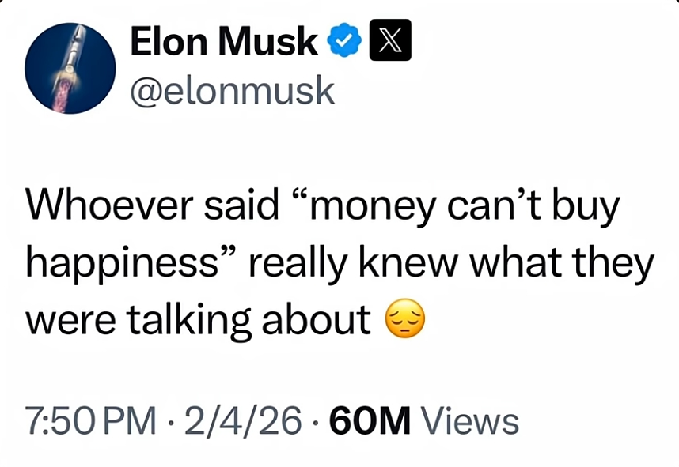
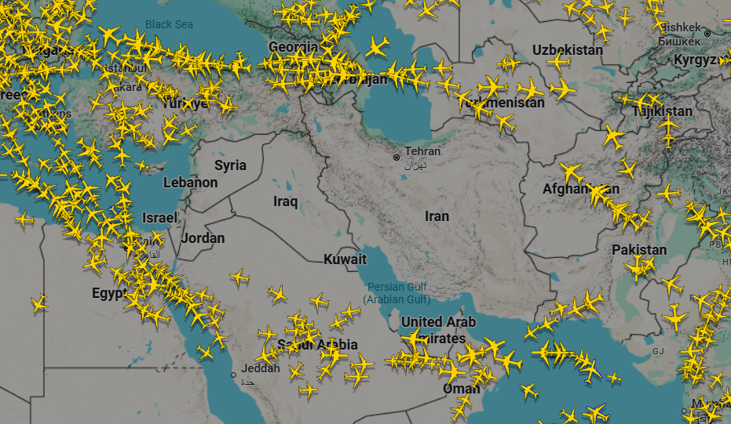

Random stuffs 7th
Xin chào / Hello / Здравствуйте!
Welcome to the seventh Random stuffs entry which belongs to February 2026! A month without 30th or 31st, let's see what were in this month...
Elon Musk's netsworth

Acordding to Forbes, Elon Musk's net worth, as I am writing this, is $839B. A few weeks ago, he posted on X (aka Twitter though I don't think someone wouldn't know this) saying that «Whoever said „money can't buy happiness” really knew what they were talking about».
Bro's the richest bloke in this f-ing world yet he said he was still not happy. Well, Elon, in case you see this, if you are not happy with your money, then could you give it to me so that I can test?
Iran situation
I planned to write about the Iranian protests which I forgot to cover in the last entry. However, the situation has escalated recently and I have more things to say than just the protests.
Iranian protests
Since 28 December 2025, protests have erupted across almost every provinces of Iran. So people initially protested due to the country's economic issues, but now they aim to end the Islamic Republic. Police has been supressing the protesters.
Iran has shut down its entire internet. Now if you try to access an Iranian website, an error will be returned. Apparently, the Iranian government do this in order to supress the protests and cover the f-ing massacres they commit. Well, kind of a terrible time to be in Iran. I've seen several Youtube users that are from Iran, hope they are safe.
War against the U.S. and Israel
Yesterday, 28 February 2026, Israel and the United States striked many sites in Iran. In the previous Twelve-Day War, when Israel attacked Iran, Iran only counter-attacked Israel. This time, however, the United States now has also joined the game at the very beginning. Now Iran has attacked many U.S. bases in the Middle East, which are located in different countries, most of which condemned Iran for that action. As of now, many people have been killed or injured by strikes in Iran, Israel and other countries.

Now planes are avoiding flying through the Middle East, the region has become a very dangerous place (even though it hasn't been safe for a day). By the way I heard that the situation (temporarily) prevents an uncle of my friend going home. Not because he's in Iran though, he's in Norway acordding to what I know. The flight he was going to board was cancelled because it would have to fly through the Middle East.
Assassination of Ali Khamenei
In case you don't know about Ali Khamenei, he was the leader of Iran since 1989 until recently. He just has been killed in an airstrike yesterday. There are also several Iranian commanders and important political figures have been killed by Israeli forces previously. Iran has announced 40 days of mourning. So well, one more national leader was removed by Donald Trump, who could possibly be the next one?
By the way, it is quite surprising that I were kind of interested in Venezuela and Iran in last year. Well, I am pretty shocked that both of them have been attacked by America in 2026.
Ok, that is enough for this month's Random stuffs entry. See you next time and wish you won't be hurt by any war!